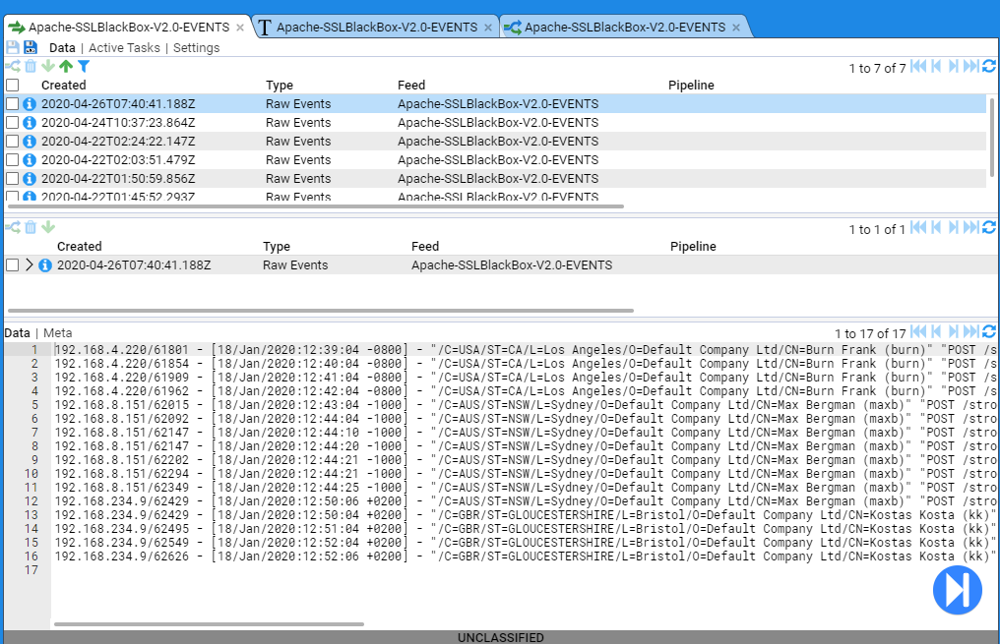
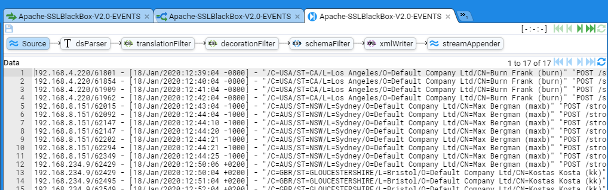
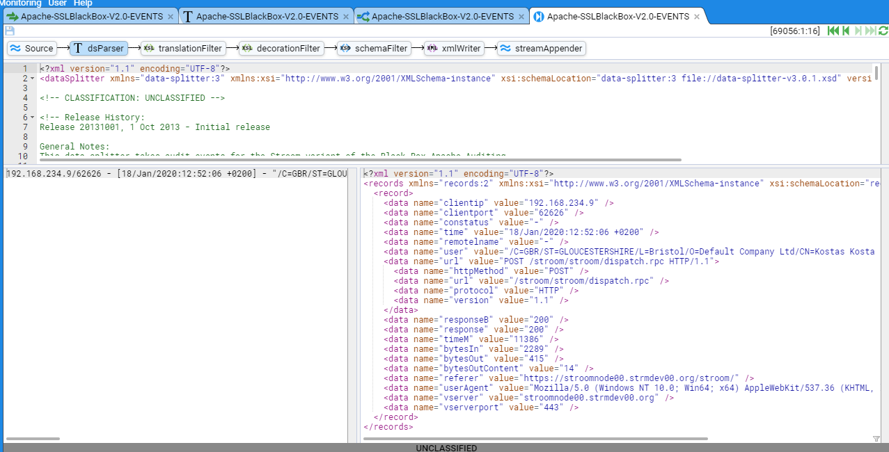
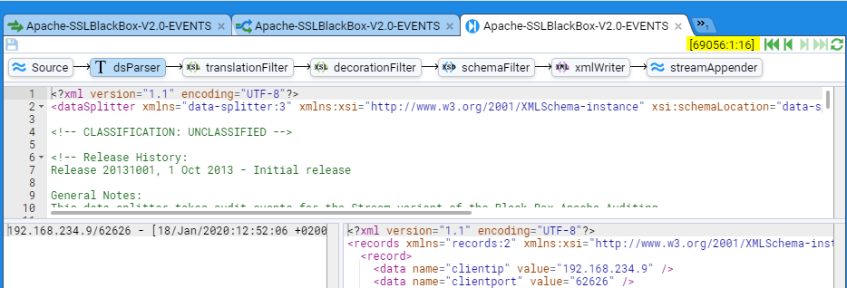
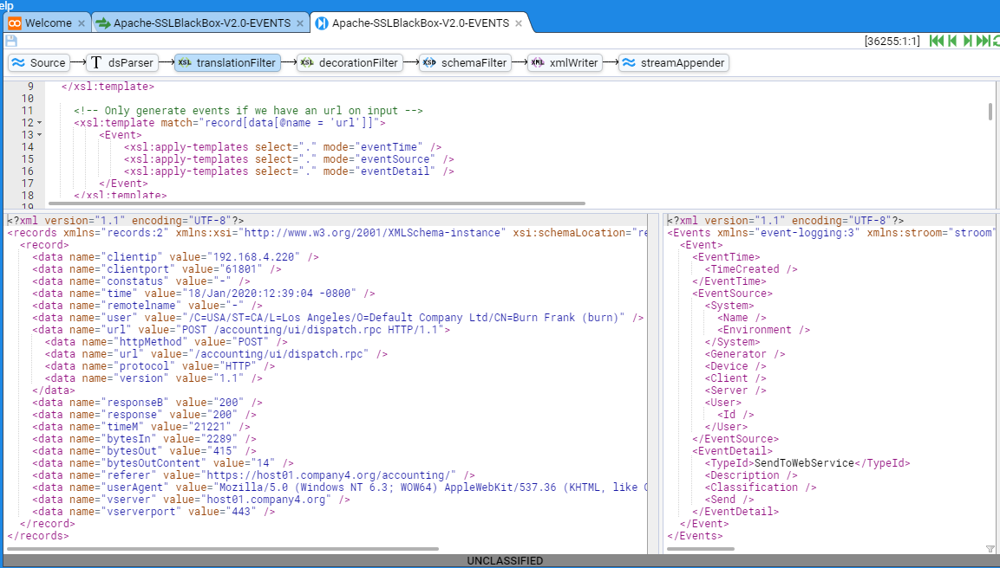
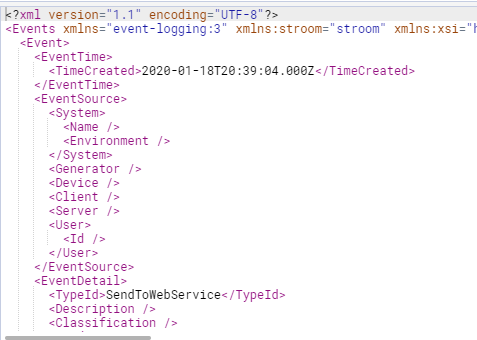
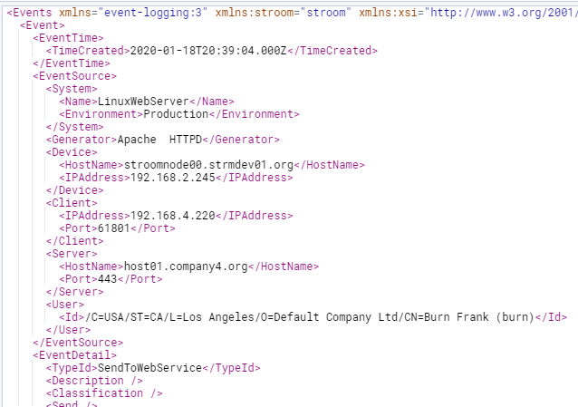
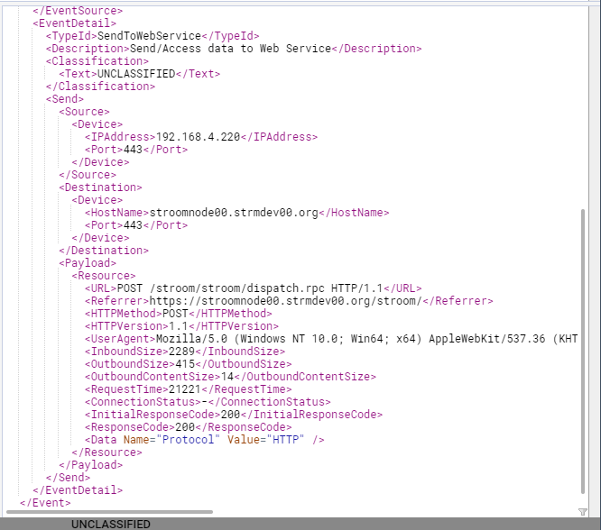

Stroom HOWTO - Apache HTTPD Event Feed
The following will take you through the process of creating an Event Feed in Stroom.
In this example, the logs are in a well-defined, line based, text format so we will use a Data Splitter parser to transform the logs into simple record-based XML and then a XSLT translation to normalise them into the Event schema.
A separate document will describe the method of automating the storage of normalised events for this feed. Further, we will not Decorate these events. Again, Event Decoration is described in another document.
Author: John Doe \ Last Updated: 7 Mar 2020 \ Recommended Additional Documentation: HOWTO - Enabling Processors for a Pipeline
Event Log Source
For this example, we will use logs from an Apache HTTPD Web server. In fact, the web server in front of Stroom.
To get the optimal information from the Apache HTTPD access logs, we define our log format based on an extension of the BlackBox format. The format is described and defined below. This is an extract from a httpd configuration file (/etc/httpd/conf/httpd.conf)
# Stroom - Black Box Auditing configuration
#
# %a - Client IP address (not hostname (%h) to ensure ip address only)
# When logging the remote host, it is important to log the client IP address, not the
# hostname. We do this with the '%a' directive. Even if HostnameLookups are turned on,
# using '%a' will only record the IP address. For the purposes of BlackBox formats,
# reversed DNS should not be trusted
# %{REMOTE_PORT}e - Client source port
# Logging the client source TCP port can provide some useful network data and can help
# one associate a single client with multiple requests.
# If two clients from the same IP address make simultaneous connections, the 'common log'
# file format cannot distinguish between those clients. Otherwise, if the client uses
# keep-alives, then every hit made from a single TCP session will be associated by the same
# client port number.
# The port information can indicate how many connections our server is handling at once,
# which may help in tuning server TCP/OP settings. It will also identify which client ports
# are legitimate requests if the administrator is examining a possible SYN-attack against a
# server.
# Note we are using the REMOTE_PORT environment variable. Environment variables only come
# into play when mod_cgi or mod_cgid is handling the request.
# %X - Connection status (use %c for Apache 1.3)
# The connection status directive tells us detailed information about the client connection.
# It returns one of three flags:
# x if the client aborted the connection before completion,
# + if the client has indicated that it will use keep-alives (and request additional URLS),
# - if the connection will be closed after the event
# Keep-Alive is a HTTP 1.1. directive that informs a web server that a client can request multiple
# files during the same connection. This way a client doesn't need to go through the overhead
# of re-establishing a TCP connection to retrieve a new file.
# %t - time - or [%{%d/%b/%Y:%T}t.%{msec_frac}t %{%z}t] for Apache 2.4
# The %t directive records the time that the request started.
# NOTE: When deployed on an Apache 2.4, or better, environment, you should use
# strftime format in order to get microsecond resolution.
# %l - remote logname
# %u - username [in quotes]
# The remote user (from auth; This may be bogus if the return status (%s) is 401
# for non-ssl services)
# For SSL services, user names need to be delivered as DNs to deliver PKI user details
# in full. To pass through PKI certificate properties in the correct form you need to
# add the following directives to your Apache configuration:
# SSLUserName SSL_CLIENT_S_DN
# SSLOptions +StdEnvVars
# If you cannot, then use %{SSL_CLIENT_S_DN}x in place of %u and use blackboxSSLUser
# LogFormat nickname
# %r - first line of text sent by web client [in quotes]
# This is the first line of text send by the web client, which includes the request
# method, the full URL, and the HTTP protocol.
# %s - status code before any redirection
# This is the status code of the original request.
# %>s - status code after any redirection has taken place
# This is the final status code of the request, after any internal redirections may
# have taken place.
# %D - time in microseconds to handle the request
# This is the number of microseconds the server took to handle the request in microseconds
# %I - incoming bytes
# This is the bytes received, include request and headers. It cannot, by definition be zero.
# %O - outgoing bytes
# This is the size in bytes of the outgoing data, including HTTP headers. It cannot, by
# definition be zero.
# %B - outgoing content bytes
# This is the size in bytes of the outgoing data, EXCLUDING HTTP headers. Unlike %b, which
# records '-' for zero bytes transferred, %B will record '0'.
# %{Referer}i - Referrer HTTP Request Header [in quotes]
# This is typically the URL of the page that made the request. If linked from
# e-mail or direct entry this value will be empty. Note, this can be spoofed
# or turned off
# %{User-Agent}i - User agent HTTP Request Header [in quotes]
# This is the identifying information the client (browser) reports about itself.
# It can be spoofed or turned off
# %V - the server name according to the UseCannonicalName setting
# This identifies the virtual host in a multi host webservice
# %p - the canonical port of the server servicing the request
# Define a variation of the Black Box logs
#
# Note, you only need to use the 'blackboxSSLUser' nickname if you cannot set the
# following directives for any SSL configurations
# SSLUserName SSL_CLIENT_S_DN
# SSLOptions +StdEnvVars
# You will also note the variation for no logio module. The logio module supports
# the %I and %O formatting directive
#
<IfModule mod_logio.c>
LogFormat "%a/%{REMOTE_PORT}e %X %t %l \"../../"%r\" %s/%>s %D %I/%O/%B \"%{Referer}i\" \"%{User-Agent}i\" %V/%p" blackboxUser
LogFormat "%a/%{REMOTE_PORT}e %X %t %l \"%{SSL_CLIENT_S_DN../../"%r\" %s/%>s %D %I/%O/%B \"%{Referer}i\" \"%{User-Agent}i\" %V/%p" blackboxSSLUser
</IfModule>
<IfModule !mod_logio.c>
LogFormat "%a/%{REMOTE_PORT}e %X %t %l \"../../"%r\" %s/%>s %D 0/0/%B \"%{Referer}i\" \"%{User-Agent}i\" %V/$p" blackboxUser
LogFormat "%a/%{REMOTE_PORT}e %X %t %l \"%{SSL_CLIENT_S_DN../../"%r\" %s/%>s %D 0/0/%B \"%{Referer}i\" \"%{User-Agent}i\" %V/$p" blackboxSSLUser
</IfModule>
A copy of this configuration can be found here.
As Stroom can use PKI for login, you can configure Stroom’s Apache to make use of the blackboxSSLUser log format. A sample set of logs in this format appear below.
192.168.4.220/61801 - [18/Jan/2020:12:39:04 -0800] - "/C=USA/ST=CA/L=Los Angeles/O=Default Company Ltd/CN=Burn Frank (burn)" "POST /accounting/ui/dispatch.rpc HTTP/1.1" 200/200 21221 2289/415/14 "https://host01.company4.org/accounting/" "Mozilla/5.0 (Windows NT 6.3; WOW64) AppleWebKit/537.36 (KHTML, like Gecko) Chrome/39.0.2171.99 Safari/537.36" host01.company4.org/443
192.168.4.220/61854 - [18/Jan/2020:12:40:04 -0800] - "/C=USA/ST=CA/L=Los Angeles/O=Default Company Ltd/CN=Burn Frank (burn)" "POST /accounting/ui/dispatch.rpc HTTP/1.1" 200/200 7889 2289/415/14 "https://host01.company4.org/accounting/" "Mozilla/5.0 (Windows NT 6.3; WOW64) AppleWebKit/537.36 (KHTML, like Gecko) Chrome/39.0.2171.99 Safari/537.36" host01.company4.org/443
192.168.4.220/61909 - [18/Jan/2020:12:41:04 -0800] - "/C=USA/ST=CA/L=Los Angeles/O=Default Company Ltd/CN=Burn Frank (burn)" "POST /accounting/ui/dispatch.rpc HTTP/1.1" 200/200 6901 2389/3796/14 "https://host01.company4.org/accounting/" "Mozilla/5.0 (Windows NT 6.3; WOW64) AppleWebKit/537.36 (KHTML, like Gecko) Chrome/39.0.2171.99 Safari/537.36" host01.company4.org/443
192.168.4.220/61962 - [18/Jan/2020:12:42:04 -0800] - "/C=USA/ST=CA/L=Los Angeles/O=Default Company Ltd/CN=Burn Frank (burn)" "POST /accounting/ui/dispatch.rpc HTTP/1.1" 200/200 11219 2289/415/14 "https://host01.company4.org/accounting/" "Mozilla/5.0 (Windows NT 6.3; WOW64) AppleWebKit/537.36 (KHTML, like Gecko) Chrome/39.0.2171.99 Safari/537.36" host01.company4.org/443
192.168.3.117/62015 - [18/Jan/2020:12:43:04 -1000] - "/C=AUS/ST=NSW/L=Sydney/O=Default Company Ltd/CN=Max Bergman (maxb)" "POST /accounting/ui/dispatch.rpc HTTP/1.1" 200/200 4265 2289/415/14 "https://stroomnode01.strmdev01.org/accounting/" "Mozilla/5.0 (Windows NT 6.3; WOW64) AppleWebKit/537.36 (KHTML, like Gecko) Chrome/39.0.2171.99 Safari/537.36" stroomnode01.strmdev01.org/443
192.168.3.117/62092 - [18/Jan/2020:12:44:04 -1000] - "/C=AUS/ST=NSW/L=Sydney/O=Default Company Ltd/CN=Max Bergman (maxb)" "POST /accounting/ui/dispatch.rpc HTTP/1.1" 200/200 9791 2289/415/14 "https://stroomnode01.strmdev01.org/accounting/" "Mozilla/5.0 (Windows NT 6.3; WOW64) AppleWebKit/537.36 (KHTML, like Gecko) Chrome/39.0.2171.99 Safari/537.36" stroomnode01.strmdev01.org/443
192.168.3.117/62147 - [18/Jan/2020:12:44:04 -1000] - "/C=AUS/ST=NSW/L=Sydney/O=Default Company Ltd/CN=Max Bergman (maxb)" "POST /accounting/ui/dispatch.rpc HTTP/1.1" 200/200 11509 2289/415/14 "https://stroomnode01.strmdev01.org/accounting/" "Mozilla/5.0 (Windows NT 6.3; WOW64) AppleWebKit/537.36 (KHTML, like Gecko) Chrome/39.0.2171.99 Safari/537.36" stroomnode01.strmdev01.org/443
192.168.3.117/62202 - [18/Jan/2020:12:44:04 -1000] - "/C=AUS/ST=NSW/L=Sydney/O=Default Company Ltd/CN=Max Bergman (maxb)" "POST /accounting/ui/dispatch.rpc HTTP/1.1" 200/200 4627 2389/3796/14 "https://stroomnode01.strmdev01.org/accounting/" "Mozilla/5.0 (Windows NT 6.3; WOW64) AppleWebKit/537.36 (KHTML, like Gecko) Chrome/39.0.2171.99 Safari/537.36" stroomnode01.strmdev01.org/443
192.168.3.117/62294 - [18/Jan/2020:12:44:04 -1000] - "/C=AUS/ST=NSW/L=Sydney/O=Default Company Ltd/CN=Max Bergman (maxb)" "POST /accounting/ui/dispatch.rpc HTTP/1.1" 200/200 12367 2289/415/14 "https://stroomnode01.strmdev01.org/accounting/" "Mozilla/5.0 (Windows NT 6.3; WOW64) AppleWebKit/537.36 (KHTML, like Gecko) Chrome/39.0.2171.99 Safari/537.36" stroomnode01.strmdev01.org/443
192.168.3.117/62349 - [18/Jan/2020:12:44:04 -1000] - "/C=AUS/ST=NSW/L=Sydney/O=Default Company Ltd/CN=Max Bergman (maxb)" "POST /accounting/ui/dispatch.rpc HTTP/1.1" 200/200 12765 2289/415/14 "https://stroomnode01.strmdev01.org/accounting/" "Mozilla/5.0 (Windows NT 6.3; WOW64) AppleWebKit/537.36 (KHTML, like Gecko) Chrome/39.0.2171.99 Safari/537.36" stroomnode01.strmdev01.org/443
192.168.2.245/62429 - [18/Jan/2020:12:50:04 +0200] - "/C=GBR/ST=GLOUCESTERSHIRE/L=Bristol/O=Default Company Ltd/CN=Kostas Kosta (kk)" "POST /accounting/ui/dispatch.rpc HTTP/1.1" 200/200 12245 2289/415/14 "https://stroomnode00.strmdev01.org/accounting/" "Mozilla/5.0 (Windows NT 6.3; WOW64) AppleWebKit/537.36 (KHTML, like Gecko) Chrome/39.0.2171.99 Safari/537.36" stroomnode00.strmdev01.org/443
192.168.2.245/62495 - [18/Jan/2020:12:51:04 +0200] - "/C=GBR/ST=GLOUCESTERSHIRE/L=Bristol/O=Default Company Ltd/CN=Kostas Kosta (kk)" "POST /accounting/ui/dispatch.rpc HTTP/1.1" 200/200 4327 2289/415/14 "https://stroomnode00.strmdev01.org/accounting/" "Mozilla/5.0 (Windows NT 6.3; WOW64) AppleWebKit/537.36 (KHTML, like Gecko) Chrome/39.0.2171.99 Safari/537.36" stroomnode00.strmdev01.org/443
192.168.2.245/62549 - [18/Jan/2020:12:52:04 +0200] - "/C=GBR/ST=GLOUCESTERSHIRE/L=Bristol/O=Default Company Ltd/CN=Kostas Kosta (kk)" "POST /accounting/ui/dispatch.rpc HTTP/1.1" 200/200 7148 2289/415/14 "https://stroomnode00.strmdev01.org/accounting/" "Mozilla/5.0 (Windows NT 6.3; WOW64) AppleWebKit/537.36 (KHTML, like Gecko) Chrome/39.0.2171.99 Safari/537.36" stroomnode00.strmdev01.org/443
192.168.2.245/62626 - [18/Jan/2020:12:52:04 +0200] - "/C=GBR/ST=GLOUCESTERSHIRE/L=Bristol/O=Default Company Ltd/CN=Kostas Kosta (kk)" "POST /accounting/ui/dispatch.rpc HTTP/1.1" 200/200 11386 2289/415/14 "https://stroomnode00.strmdev01.org/accounting/" "Mozilla/5.0 (Windows NT 6.3; WOW64) AppleWebKit/537.36 (KHTML, like Gecko) Chrome/39.0.2171.99 Safari/537.36" stroomnode00.strmdev01.org/443
A copy of this sample data source can be found here. Save a copy of this data to your local environment for use later in this HOWTO. Save this file as a text document with ANSI encoding.
Create the Feed and its Pipeline
To reflect the source of these Accounting Logs, we will name our feed and its pipeline Apache-SSLBlackBox-V2.0-EVENTS and it will be stored in the system group Apache HTTPD under the main system group - Event Sources.
Create System Group
To create the system group Apache HTTPD, navigate to the Event Sources/Infrastructure/WebServer system group within the Explorer pane (if this system group structure does not already exist in your Stroom instance then refer to the HOWTO Stroom Explorer Management for guidance). Left click to highlight the WebServer system group then right click to bring up the object context menu. Navigate to the New icon, then the Folder icon to reveal the New Folder selection window.

In the New Folder window enter Apache HTTPD into the Name: text entry box.

The click on OK at which point you will be presented with the Apache HTTPD system group configuration tab. Also note, the WebServer system group within the Explorer pane has automatically expanded to display the Apache HTTPD system group.

Close the Apache HTTPD system group configuration tab by clicking on the close item icon on the right-hand side of the tab  . We now need to create, in order
. We now need to create, in order
- the Feed,
- the Text Parser,
- the Translation and finally,
- the Pipeline.
Create Feed
Within the Explorer pane, and having selected the Apache HTTPD group, right click to bring up object context menu. Navigate to New, Feed

Select the Feed icon , when the New Feed selection window comes up, ensure the Apache HTTPD system group is selected or navigate to it. Then enter the name of the feed, Apache-SSLBlackBox-V2.0-EVENTS, into the Name: text entry box the press OK.
It should be noted that the default Stroom FeedName pattern will not accept this name. One needs to modify the stroom.feedNamePattern stroom property to change the default pattern to ^[a-zA-Z0-9_-\.]{4,}$. See the HOWTO on System Properties document to see how to make this change.

At this point you will be presented with the new feed's configuration tab and the feed's Explorer object will automatically appear in the Explorer pane within the Apache HTTPD system group.
Select the Settings tab on the feed's configuration tab. Enter an appropriate description into the Description: text entry box, for instance:
"Apache HTTPD events for BlackBox Version 2.0. These events are from a Secure service (https)."
In the Classification: text entry box, enter a Classification of the data that the event feed will contain - that is the classification or sensitivity of the accounting log’s content itself.
As this is not a Reference Feed, leave the Reference Feed: check box unchecked.
We leave the Feed Status: at Receive.
We leave the Stream Type: as Raw Events as this we will be sending batches (streams) of raw event logs.
We leave the Data Encoding: as UTF-8 as the raw logs are in this form.
We leave the Context Encoding: as UTF-8 as there no context events for this feed.
We leave the Retention Period: at Forever as we do not want to delete the raw logs.
This results in

Save the feed by clicking on the  icon.
icon.
Create Text Converter
Within the Explorer pane, and having selected the Apache HTTPD system group, right click to bring up object context menu, then navigate to the  icon to reveal the New sub-context menu. Next, navigate to the
icon to reveal the New sub-context menu. Next, navigate to the  Text Converter item
Text Converter item

and left click to select. When the New Text Converter

selection window comes up enter the name of the feed, Apache-SSLBlackBox-V2.0-EVENTS, into the Name: text entry box then press OK. At this point you will be presented with the new text converter's configuration tab.

Enter an appropriate description into the Description: text entry box, for instance
"Apache HTTPD events for BlackBox Version 2.0 - text converter. See Conversion for complete documentation."
Set the Converter Type: to be Data Splitter from drop down menu.

Save the text converter by clicking on the  icon.
icon.
Create XSLT Translation
Within the Explorer pane, and having selected the Apache HTTPD system group, right click to bring up object context menu, then navigate to the New icon to reveal the New sub-context menu. Next, navigate to the  item and left click to select.
item and left click to select.

When the New XSLT selection window comes up,

enter the name of the feed, Apache-SSLBlackBox-V2.0-EVENTS, into the Name: text entry box then press OK. At this point you will be presented with the new XSLT's configuration tab.

Enter an appropriate description into the Description: text entry box, for instance
"Apache HTTPD events for BlackBox Version 2.0 - translation. See Translation for complete documentation."

Save the XSLT by clicking on the  icon.
icon.
Create Pipeline
In the process of creating this pipeline we have assumed that the Template Pipeline content pack has been loaded, so that we can Inherit a pipeline structure from this content pack and configure it to support this specific feed.
Within the Explorer pane, and having selected the Apache HTTPD system group, right click to bring up object context menu, then the New sub-context menu. Navigate to the  Pipeline and left click to select. When the New Pipeline
Pipeline and left click to select. When the New Pipeline

selection window comes up, navigate to, then select the Apache HTTPD system group and then enter the name of the pipeline, Apache-SSLBlackBox-V2.0-EVENTS into the Name: text entry box then press OK. At this you will be presented with the new pipeline’s configuration tab

As usual, enter an appropriate Description:
"Apache HTTPD events for BlackBox Version 2.0 - pipeline. This pipeline uses the standard event pipeline to store the events in the Event Store."

Save the pipeline by clicking on the  icon.
icon.
We now need to select the structure this pipeline will use. We need to move from the Settings sub-item on the pipeline configuration tab to the Structure sub-item. This is done by clicking on the Structure link, at which we see

Next we will choose an Event Data pipeline. This is done by inheriting it from a defined set of Template Pipelines. To do this, click on the menu selection icon to the right of the Inherit From: text display box.
When the Choose item

selection window appears, select from the Template Pipelines system group. In this instance, as our input data is text, we select (left click) the
 Event Data (Text) pipeline
Event Data (Text) pipeline

then press OK. At this we see the inherited pipeline structure of

For the purpose of this HOWTO, we are only interested in two of the eleven (11) elements in this pipeline
- the Text Converter labelled dsParser
- the XSLT Translation labelled translationFilter
We now need to associate our Text Converter and Translation with the pipeline so that we can pass raw events (logs) through our pipeline in order to save them in the Event Store.
To associate the Text Converter, select the Text Converter icon, to display.

Now identify to the Property pane (the middle pane of the pipeline configuration tab), then and double click on the textConverter Property Name to display the Edit Property selection window that allows you to edit the given property

We leave the Property Source: as Inherit but we need to change the Property Value: from None to be our newly created Apache-SSLBlackBox-V2.0-EVENTS Text Converter.
To do this, position the cursor over the menu selection  icon to the right of the Value: text display box and click to select. Navigate to the
icon to the right of the Value: text display box and click to select. Navigate to the Apache HTTPD system group then select the Apache-SSLBlackBox-V2.0-EVENTS text Converter

then press OK. At this we will see the Property Value set

Again press OK to finish editing this property and we see that the textConverter Property has been set to Apache-SSLBlackBox-V2.0-EVENTS

We perform the same actions to associate the translation.
First, we select the translation Filter’s  icon and then within translation Filter’s Property pane we double click on the xslt Property Name to bring up the Property Editor. As before, bring up the Choose item selection window, navigate to the
icon and then within translation Filter’s Property pane we double click on the xslt Property Name to bring up the Property Editor. As before, bring up the Choose item selection window, navigate to the Apache HTTPD system group and select the
Apache-SSLBlackBox-V2.0-EVENTS xslt Translation.

We leave the remaining properties in the translation Filter’s Property pane at their default values. The result is the assignment of our translation to the xslt Property.

For the moment, we will not associate a decoration filter.
Save the pipeline by clicking on its  icon.
icon.
Manually load Raw Event test data
Having established the pipeline, we can now start authoring our text converter and translation. The first step is to load some Raw Event test data. Previously in the Event Log Source of this HOWTO you saved a copy of the file sampleApacheBlackBox.log to your local environment. It contains only a few events as the content is consistently formatted. We could feed the test data by posting the file to Stroom’s accounting/datafeed url, but for this example we will manually load the file. Once developed, raw data is posted to the web service.
Select the  configuration tab and select the Data sub-item to display
configuration tab and select the Data sub-item to display

This window is divided into three panes.
The top pane displays the Stream Table, which is a table of the latest streams that belong to the feed (clearly it’s empty).

Note that a Raw Event stream is made up of data from a single file of data or aggregation of multiple data files and also meta-data associated with the data file(s). For example, file names, file size, etc.
The middle pane displays a Specific feed and any linked streams. To display a Specific feed, you select it from the Stream Table above.

The bottom pane displays the selected stream’s data or meta-data.

Note the Upload icon  in the top left of the Stream table pane. On clicking the Upload icon, we are presented with the data Upload selection window.
in the top left of the Stream table pane. On clicking the Upload icon, we are presented with the data Upload selection window.

As stated earlier, raw event data is normally posted as a file to the Stroom web server. As part of this posting action, a set of well-defined HTTP extra headers are sent as part of the post. These headers, in the form of key value pairs, provide additional context associated with the system sending the logs. These standard headers become Stroom feed attributes available to the Stroom translation. Common attributes are
- System - the name of the System providing the logs
- Environment - the environment of the system (Production, Quality Assurance, Reference, Development)
- Feed - the feedname itself
- MyHost - the fully qualified domain name of the system sending the logs
- MyIPaddress - the IP address of the system sending the logs
- MyNameServer - the name server the system resolves names through
Since our translation will want these feed attributes, we will set them in the Meta Data text entry box of the Upload selection window. Note we can skip Feed as this will automatically be assigned correctly as part of the upload action (setting it to Apache-SSLBlackBox-V2.0-EVENTS obviously). Our Meta Data: will have
- System:LinuxWebServer
- Environment:Production
- MyHost:stroomnode00.strmdev01.org
- MyIPaddress:192.168.2.245
- MyNameServer:192.168.2.254
We select a Stream Type: of Raw Events as this data is for an Event Feed. As this is not a Reference Feed we ignore the Effective: entry box (a date/time selector).

We now click the Choose File button, then navigate to the location of the raw log file you downloaded earlier, sampleApacheBlackBox.log

then click Open to return to the Upload selection window where we can then press OK to perform the upload.

An Alert dialog window is presented  which should be closed.
which should be closed.
The stream we have just loaded will now be displayed in the Streams Table pane. Note that the Specific Stream and Data/Meta-data panes are still blank.

If we select the stream by clicking anywhere along its line, the stream is highlighted and the Specific Stream and Data/Meta-data_ panes now display data.

The Specific Stream pane only displays the Raw Event stream and the Data/Meta-data pane displays the content of the log file just uploaded (the Data link). If we were to click on the Meta link at the top of the Data/Meta-data pane, the log data is replaced by this stream’s meta-data.

Note that, in addition to the feed attributes we set, the upload process added additional feed attributes of
- Feed - the feed name
- ReceivedTime - the time the feed was received by Stroom
- RemoteFile - the name of the file loaded
- StreamSize - the size, in bytes, of the loaded data within the stream
- user-agent - the user agent used to present the stream to Stroom - in this case, the Stroom user Interface
We now have data that will allow us to develop our text converter and translation.
Step data through Pipeline - Source
We now need to step our data through the pipeline.
To do this, set the check-box on the Specific Stream pane and we note that the previously grayed out action icons  are activated
are activated 

We now want to step our data through the first element of the pipeline, the Text Converter. We enter Stepping Mode by pressing the stepping button  found at the bottom right corner of the Data/Meta-data pane.
found at the bottom right corner of the Data/Meta-data pane.
We will then be requested to choose a pipeline to step with, at which, you should navigate to the Apache-SSLBlackBox-V2.0-EVENTS pipeline as per

then press OK.
At this point, we enter the pipeline Stepping tab

which, initially displays the Raw Event data from our stream. This is the Source display for the Event Pipeline.
Step data through Pipeline - Text Converter
We click on the  icon to enter the Text Converter stepping window.
icon to enter the Text Converter stepping window.

This stepping tab is divided into three sub-panes. The top one is the Text Converter editor and it will allow you to edit the text conversion. The bottom left window displays the input to the Text Converter. The bottom right window displays the output from the Text Converter for the given input.
We also note an error indicator - that of an error in the editor pane as indicated by the black back-grounded x and rectangular black boxes to the right of the editor’s scroll bar.

In essence, this means that we have no text converter to pass the Raw Event data through.
To correct this, we will author our text converter using the Data Splitter language. Normally this is done incrementally to more easily develop the parser. The minimum text converter contains
<?xml version="1.1" encoding="UTF-8"?>
<dataSplitter xmlns="data-splitter:3" xmlns:xsi="http://www.w3.org/2001/XMLSchema-instance" xsi:schemaLocation="data-splitter:3 file://data-splitter-v3.0.1.xsd" version="3.0">
<split delimiter="\n">
<group>
<regex pattern="^(.*)$">
<data name="rest" value="$1" />
</regex>
</group>
</split>
</dataSplitter>
If we now press the Step First  icon the error will disappear and the stepping window will show.
icon the error will disappear and the stepping window will show.

As we can see, the first line of our Raw Event is displayed in the input pane and the output window holds the converted XML output where we just have a single data element with a name attribute of rest and a value attribute of the complete raw event as our regular expression matched the entire line.
The next incremental step in the parser, would be to parse out additional data elements. For example, in this next iteration we extract the client ip address, the client port and hold the rest of the Event in the rest data element.
With the text converter containing
<?xml version="1.1" encoding="UTF-8"?>
<dataSplitter xmlns="data-splitter:3" xmlns:xsi="http://www.w3.org/2001/XMLSchema-instance" xsi:schemaLocation="data-splitter:3 file://data-splitter-v3.0.1.xsd" version="3.0">
<split delimiter="\n">
<group>
<regex pattern="^([^/]+)/([^ ]+) (.*)$">
<data name="clientip" value="$1" />
<data name="clientport" value="$2" />
<data name="rest" value="$3" />
</regex>
</group>
</split>
</dataSplitter>
and a click on the Refresh Current Step  icon we will see the output pane contain
icon we will see the output pane contain

We continue this incremental parsing until we have our complete parser.
The following is our complete Text Converter which generates xml records as defined by the Stroom records v3.0 schema.
<?xml version="1.1" encoding="UTF-8"?>
<dataSplitter xmlns="data-splitter:3" xmlns:xsi="http://www.w3.org/2001/XMLSchema-instance" xsi:schemaLocation="data-splitter:3 file://data-splitter-v3.0.1.xsd" version="3.0">
<!-- CLASSIFICATION: UNCLASSIFIED -->
<!-- Release History:
Release 20131001, 1 Oct 2013 - Initial release
General Notes:
This data splitter takes audit events for the Stroom variant of the Black Box Apache Auditing.
Event Format: The following is extracted from the Configuration settings for the Stroom variant of the Black Box Apache Auditing format.
# STROOM - Black Box Auditing configuration
#
# %a - Client IP address (not hostname (%h) to ensure ip address only)
# When logging the remote host, it is important to log the client IP address, not the
# hostname. We do this with the '%a' directive. Even if HostnameLookups are turned on,
# using '%a' will only record the IP address. For the purposes of BlackBox formats,
# reversed DNS should not be trusted
# %{REMOTE_PORT}e - Client source port
# Logging the client source TCP port can provide some useful network data and can help
# one associate a single client with multiple requests.
# If two clients from the same IP address make simultaneous connections, the 'common log'
# file format cannot distinguish between those clients. Otherwise, if the client uses
# keep-alives, then every hit made from a single TCP session will be associated by the same
# client port number.
# The port information can indicate how many connections our server is handling at once,
# which may help in tuning server TCP/OP settings. It will also identify which client ports
# are legitimate requests if the administrator is examining a possible SYN-attack against a
# server.
# Note we are using the REMOTE_PORT environment variable. Environment variables only come
# into play when mod_cgi or mod_cgid is handling the request.
# %X - Connection status (use %c for Apache 1.3)
# The connection status directive tells us detailed information about the client connection.
# It returns one of three flags:
# x if the client aborted the connection before completion,
# + if the client has indicated that it will use keep-alives (and request additional URLS),
# - if the connection will be closed after the event
# Keep-Alive is a HTTP 1.1. directive that informs a web server that a client can request multiple
# files during the same connection. This way a client doesn't need to go through the overhead
# of re-establishing a TCP connection to retrieve a new file.
# %t - time - or [%{%d/%b/%Y:%T}t.%{msec_frac}t %{%z}t] for Apache 2.4
# The %t directive records the time that the request started.
# NOTE: When deployed on an Apache 2.4, or better, environment, you should use
# strftime format in order to get microsecond resolution.
# %l - remote logname
#
# %u - username [in quotes]
# The remote user (from auth; This may be bogus if the return status (%s) is 401
# for non-ssl services)
# For SSL services, user names need to be delivered as DNs to deliver PKI user details
# in full. To pass through PKI certificate properties in the correct form you need to
# add the following directives to your Apache configuration:
# SSLUserName SSL_CLIENT_S_DN
# SSLOptions +StdEnvVars
# If you cannot, then use %{SSL_CLIENT_S_DN}x in place of %u and use blackboxSSLUser
# LogFormat nickname
# %r - first line of text sent by web client [in quotes]
# This is the first line of text send by the web client, which includes the request
# method, the full URL, and the HTTP protocol.
# %s - status code before any redirection
# This is the status code of the original request.
# %>s - status code after any redirection has taken place
# This is the final status code of the request, after any internal redirections may
# have taken place.
# %D - time in microseconds to handle the request
# This is the number of microseconds the server took to handle the request in microseconds
# %I - incoming bytes
# This is the bytes received, include request and headers. It cannot, by definition be zero.
# %O - outgoing bytes
# This is the size in bytes of the outgoing data, including HTTP headers. It cannot, by
# definition be zero.
# %B - outgoing content bytes
# This is the size in bytes of the outgoing data, EXCLUDING HTTP headers. Unlike %b, which
# records '-' for zero bytes transferred, %B will record '0'.
# %{Referer}i - Referrer HTTP Request Header [in quotes]
# This is typically the URL of the page that made the request. If linked from
# e-mail or direct entry this value will be empty. Note, this can be spoofed
# or turned off
# %{User-Agent}i - User agent HTTP Request Header [in quotes]
# This is the identifying information the client (browser) reports about itself.
# It can be spoofed or turned off
# %V - the server name according to the UseCannonicalName setting
# This identifies the virtual host in a multi host webservice
# %p - the canonical port of the server servicing the request
# Define a variation of the Black Box logs
#
# Note, you only need to use the 'blackboxSSLUser' nickname if you cannot set the
# following directives for any SSL configurations
# SSLUserName SSL_CLIENT_S_DN
# SSLOptions +StdEnvVars
# You will also note the variation for no logio module. The logio module supports
# the %I and %O formatting directive
#
<IfModule mod_logio.c>
LogFormat "%a/%{REMOTE_PORT}e %X %t %l \"%u\" \"%r\" %s/%>s %D I/%O/%B \"%{Referer}i\" \"%{User-Agent}i\" %V/%p" blackboxUser
LogFormat "%a/%{REMOTE_PORT}e %X %t %l \"%{SSL_CLIENT_S_DN}x\" \"%r\" %s/%>s %D %I/%O/%B \"%{Referer}i\" \"%{User-Agent}i\" %V/%p" blackboxSSLUser
</IfModule>
<IfModule !mod_logio.c>
LogFormat "%a/%{REMOTE_PORT}e %X %t %l \"%u\" \"%r\" %s/%>s %D 0/0/%B \"%{Referer}i\" \"%{User-Agent}i\" %V/$p" blackboxUser
LogFormat "%a/%{REMOTE_PORT}e %X %t %l \"%{SSL_CLIENT_S_DN}x\" \"%r\" %s/%>s %D 0/0/%B \"%{Referer}i\" \"%{User-Agent}i\" %V/$p" blackboxSSLUser
</IfModule> -->
<!-- Match line -->
<split delimiter="\n">
<group>
<regex pattern="^([^/]+)/([^ ]+) ([^ ]+) \[([^\]]+)] ([^ ]+) "([^"]+)" "([^"]+)" (\d+)/(\d+) (\d+) ([^/]+)/([^/]+)/(\d+) "([^"]+)" "([^"]+)" ([^/]+)/([^ ]+)">
<data name="clientip" value="$1" />
<data name="clientport" value="$2" />
<data name="constatus" value="$3" />
<data name="time" value="$4" />
<data name="remotelname" value="$5" />
<data name="user" value="$6" />
<data name="url" value="$7">
<group value="$7" ignoreErrors="true">
<!--
Special case the "GET /" url string as opposed to the more standard "method url protocol/protocol_version".
Also special case a url of "-" which occurs on some errors (eg 408)
-->
<regex pattern="^-$">
<data name="url" value="error" />
</regex>
<regex pattern="^([^ ]+) (/)$">
<data name="httpMethod" value="$1" />
<data name="url" value="$2" />
</regex>
<regex pattern="^([^ ]+) ([^ ]+) ([^ /]*)/([^ ]*)">
<data name="httpMethod" value="$1" />
<data name="url" value="$2" />
<data name="protocol" value="$3" />
<data name="version" value="$4" />
</regex>
</group>
</data>
<data name="responseB" value="$8" />
<data name="response" value="$9" />
<data name="timeM" value="$10" />
<data name="bytesIn" value="$11" />
<data name="bytesOut" value="$12" />
<data name="bytesOutContent" value="$13" />
<data name="referer" value="$14" />
<data name="userAgent" value="$15" />
<data name="vserver" value="$16" />
<data name="vserverport" value="$17" />
</regex>
</group>
</split>
</dataSplitter>
A copy of this Data Splitter can be found here.
If we now press the Step First  icon we will see the complete parsed record
icon we will see the complete parsed record

If we click on the Step Forward  icon we will see the next event displayed in both the input and output panes.
icon we will see the next event displayed in both the input and output panes.

we click on the Step Last icon we will see the last event displayed in both the input and output panes.

You should take note of the stepping key that has been displayed in each stepping window. The stepping key are the numbers enclosed in square brackets e.g. [146271:1:14] found in the top right-hand side of the stepping window next to the stepping icons

The form of these keys is [ streamId ':' subStreamId ':' recordNo]
where
- streamId - is the stream ID and won’t change when stepping through the selected stream.
- subStreamId - is the sub stream ID. When Stroom processes event streams it aggregates multiple input files and this is the file number.
- recordNo - is the record number within the sub stream.
One can double click on either the subStreamId or recordNo numbers and enter a new number. This allows you to ‘step’ around a stream rather than just relying on first, previous, next and last movement.
Note, you should now Save  your edited Text Converter.
your edited Text Converter.
Step data through Pipeline - Translation
To start authoring the xslt Translation Filter, press the  icon which steps us to the xsl Translation Filter pane.
icon which steps us to the xsl Translation Filter pane.

As for the Text Converter stepping tab, this tab is divided into three sub-panes. The top one is the xslt translation editor and it will allow you to edit the xslt translation. The bottom left window displays the input to the xslt translation (which is the output from the Text Converter). The bottom right window displays the output from the xslt Translation filter for the given input.
We now click on the pipeline Step Forward button  to single step the Text Converter records element data through our xslt Translation. We see no change as an empty translation will just perform a copy of the input data.
to single step the Text Converter records element data through our xslt Translation. We see no change as an empty translation will just perform a copy of the input data.
To correct this, we will author our xslt translation. Like the Data Splitter this is also authored incrementally. A minimum xslt translation might contain
<?xml version="1.0" encoding="UTF-8" ?>
<xsl:stylesheet xpath-default-namespace="records:2" xmlns="event-logging:3" xmlns:stroom="stroom" xmlns:xsl="http://www.w3.org/1999/XSL/Transform" xmlns:xsi="http://www.w3.org/2001/XMLSchema-instance" xmlns:xs="http://www.w3.org/2001/XMLSchema" version="3.0">
<!-- Ingest the records tree -->
<xsl:template match="records">
<Events xsi:schemaLocation="event-logging:3 file://event-logging-v3.2.3.xsd" Version="3.2.3">
<xsl:apply-templates />
</Events>
</xsl:template>
<!-- Only generate events if we have an url on input -->
<xsl:template match="record[data[@name = 'url']]">
<Event>
<xsl:apply-templates select="." mode="eventTime" />
<xsl:apply-templates select="." mode="eventSource" />
<xsl:apply-templates select="." mode="eventDetail" />
</Event>
</xsl:template>
<xsl:template match="node()" mode="eventTime">
<EventTime>
<TimeCreated/>
</EventTime>
</xsl:template>
<xsl:template match="node()" mode="eventSource">
<EventSource>
<System>
<Name />
<Environment />
</System>
<Generator />
<Device />
<Client />
<Server />
<User>
<Id />
</User>
</EventSource>
</xsl:template>
<xsl:template match="node()" mode="eventDetail">
<EventDetail>
<View>
<WebPage>
<Type>WebPage</Type>
</WebPage>
</View>
</EventDetail>
</xsl:template>
</xsl:stylesheet>

Clearly this doesn’t generate useful events. Our first iterative change might be to generate the TimeCreated element value. The change would be
<xsl:template match="node()" mode="eventTime">
<EventTime>
<TimeCreated>
<xsl:value-of select="stroom:format-date(data[@name = 'time']/@value, 'dd/MMM/yyyy:HH:mm:ss XX')" />
</TimeCreated>
</EventTime>
</xsl:template>

Adding in the EventSource elements (without ANY error checking!) as per
<xsl:template match="node()" mode="eventSource">
<EventSource>
<System>
<Name>
<xsl:value-of select="stroom:feed-attribute('System')" />
</Name>
<Environment>
<xsl:value-of select="stroom:feed-attribute('Environment')" />
</Environment>
</System>
<Generator>Apache HTTPD</Generator>
<Device>
<HostName>
<xsl:value-of select="stroom:feed-attribute('MyHost')" />
</HostName>
<IPAddress>
<xsl:value-of select="stroom:feed-attribute('MyIPAddress')" />
</IPAddress>
</Device>
<Client>
<IPAddress>
<xsl:value-of select="data[@name = 'clientip']/@value" />
</IPAddress>
<Port>
<xsl:value-of select="data[@name = 'clientport']/@value" />
</Port>
</Client>
<Server>
<HostName>
<xsl:value-of select="data[@name = 'vserver']/@value" />
</HostName>
<Port>
<xsl:value-of select="data[@name = 'vserverport']/@value" />
</Port>
</Server>
<User>
<Id>
<xsl:value-of select="data[@name='user']/@value" />
</Id>
</User>
</EventSource>
</xsl:template>
And after a Refresh Current Step  we see our output event ‘grow’ to
we see our output event ‘grow’ to

We now complete our translation by expanding the EventDetail elements to have the completed translation of (again with limited error checking and non-existent documentation!)
<?xml version="1.0" encoding="UTF-8" ?>
<xsl:stylesheet xpath-default-namespace="records:2" xmlns="event-logging:3" xmlns:stroom="stroom" xmlns:xsl="http://www.w3.org/1999/XSL/Transform" xmlns:xsi="http://www.w3.org/2001/XMLSchema-instance" xmlns:xs="http://www.w3.org/2001/XMLSchema" version="3.0">
<!-- Ingest the records tree -->
<xsl:template match="records">
<Events xsi:schemaLocation="event-logging:3 file://event-logging-v3.2.3.xsd" Version="3.2.3">
<xsl:apply-templates />
</Events>
</xsl:template>
<!-- Only generate events if we have an url on input -->
<xsl:template match="record[data[@name = 'url']]">
<Event>
<xsl:apply-templates select="." mode="eventTime" />
<xsl:apply-templates select="." mode="eventSource" />
<xsl:apply-templates select="." mode="eventDetail" />
</Event>
</xsl:template>
<xsl:template match="node()" mode="eventTime">
<EventTime>
<TimeCreated>
<xsl:value-of select="stroom:format-date(data[@name = 'time']/@value, 'dd/MMM/yyyy:HH:mm:ss XX')" />
</TimeCreated>
</EventTime>
</xsl:template>
<xsl:template match="node()" mode="eventSource">
<EventSource>
<System>
<Name>
<xsl:value-of select="stroom:feed-attribute('System')" />
</Name>
<Environment>
<xsl:value-of select="stroom:feed-attribute('Environment')" />
</Environment>
</System>
<Generator>Apache HTTPD</Generator>
<Device>
<HostName>
<xsl:value-of select="stroom:feed-attribute('MyHost')" />
</HostName>
<IPAddress>
<xsl:value-of select="stroom:feed-attribute('MyIPAddress')" />
</IPAddress>
</Device>
<Client>
<IPAddress>
<xsl:value-of select="data[@name = 'clientip']/@value" />
</IPAddress>
<Port>
<xsl:value-of select="data[@name = 'clientport']/@value" />
</Port>
</Client>
<Server>
<HostName>
<xsl:value-of select="data[@name = 'vserver']/@value" />
</HostName>
<Port>
<xsl:value-of select="data[@name = 'vserverport']/@value" />
</Port>
</Server>
<User>
<Id>
<xsl:value-of select="data[@name='user']/@value" />
</Id>
</User>
</EventSource>
</xsl:template>
<!-- -->
<xsl:template match="node()" mode="eventDetail">
<EventDetail>
<View>
<WebPage>
<Type>WebPage</Type>
<URL>
<xsl:value-of select="data[@name = 'url']/data[@name = 'url']/@value" />
</URL>
<xsl:if test="data[@name = 'referer']/@value != '-'">
<Referrer>
<xsl:value-of select="data[@name = 'referer']/@value" />
</Referrer>
</xsl:if>
<HTTPMethod>
<xsl:value-of select="data[@name = 'url']/data[@name = 'httpMethod']/@value" />
</HTTPMethod>
<UserAgent>
<xsl:value-of select="data[@name = 'userAgent']/@value" />
</UserAgent>
<ResponseCode>
<xsl:value-of select="data[@name = 'response']/@value" />
</ResponseCode>
<!-- Protocol -->
<Data Name="Protocol">
<xsl:attribute name="Value" select="data[@name = 'url']/data[@name = 'protocol']/@value" />
</Data>
<!-- Protocol Version -->
<Data Name="Version">
<xsl:attribute name="Value" select="data[@name = 'url']/data[@name = 'version']/@value" />
</Data>
<!-- Response Code Before -->
<Data Name="ResponseCodeBefore">
<xsl:attribute name="Value" select="data[@name = 'responseB']/@value" />
</Data>
<!-- Connection Status -->
<Data Name="ConnectionStatus">
<xsl:attribute name="Value" select="data[@name = 'constatus']/@value" />
</Data>
<!-- Bytes transferred -->
<xsl:if test="data[@name = 'bytesIn']/@value != '0' and data[@name = 'bytesIn']/@value != '-'">
<Data Name="BytesIn">
<xsl:attribute name="Value" select="data[@name = 'bytesIn']/@value" />
</Data>
</xsl:if>
<xsl:if test="data[@name = 'bytesOut']/@value != '0' and data[@name = 'bytesOut']/@value != '-'">
<Data Name="BytesOut">
<xsl:attribute name="Value" select="data[@name = 'bytesOut']/@value" />
</Data>
</xsl:if>
<xsl:if test="data[@name = 'bytesOutContent']/@value != '0'">
<Data Name="BytesOutContentOnly">
<xsl:attribute name="Value" select="data[@name = 'bytesOutContent']/@value" />
</Data>
</xsl:if>
<!-- Time to serve Request -->
<xsl:if test="data[@name = 'timeM']/@value != '0'">
<Data Name="TotalRequestTimeMicroseconds">
<xsl:attribute name="Value" select="data[@name = 'timeM']/@value" />
</Data>
</xsl:if>
</WebPage>
</View>
</EventDetail>
</xsl:template>
</xsl:stylesheet>
And after a Refresh Current Step Refresh  we see our complete output event
we see our complete output event

Note, you should now Save  your edited xslt Translation.
your edited xslt Translation.
A copy of this XSLT Translation can be found here.
We have completed the translation and have completed developing our Apache-SSLBlackBox-V2.0-EVENTS event feed.
At this point, this event feed is set up to accept Raw Event data, but it will not automatically process the raw data and hence it will not place events into the Event Store. To have Stroom automatically process Raw Event streams, you will need to enable Processors for this pipeline.